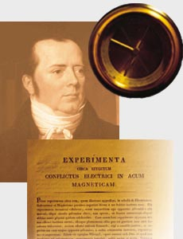

|

|
Hans Christian Ørsted
(1777-1851)
Physist and philosopher
Gave the name to
- Strength of magnetic field: 1 ørsted=79.6775 Amp/meter.
- H.C. Ørsted Institute in Copenhagen (physics and chemistry).
- Ørsted-DTU, Lyngby (elctronics, electromagnetics, etc).
- The "Ørsted-sattellitten", the first Danish satellite.
|